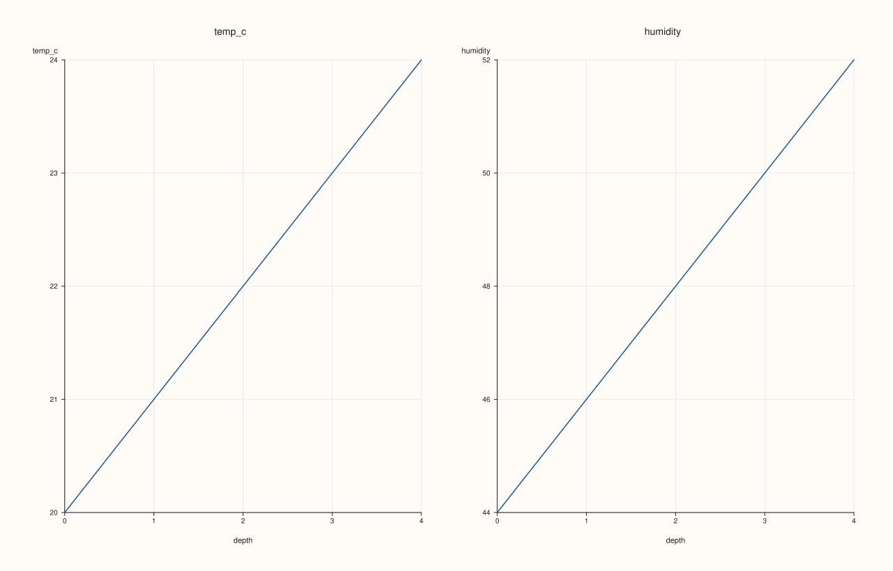
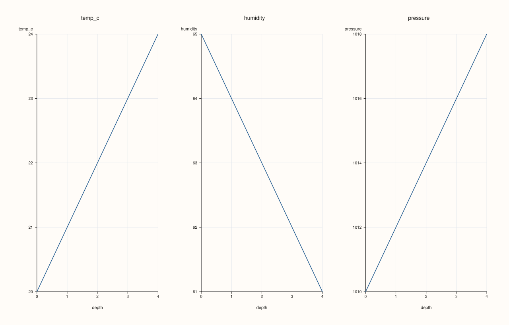

ArchivePlotAccessor::depth_facet¶
Back to ArchivePlotAccessor API Reference
Signatures¶
pluss::pl::Studio ArchivePlotAccessor::depth_facet(pluss::msharp::RangeView::Of<std::string_view> keys = {}) const
pluss::pl::Studio ArchivePlotAccessor::depth_facet(
pluss::msharp::RangeView::Of<std::string_view> keys,
const AtlasDepthFacetPlotOptions& options) const
What It Does¶
The same multi-key depth comparison as depth_compare(), laid out as
one small-multiple pane per key instead of one shared overlaid pane — reuses
AtlasPlotAccessor::depth_facet directly. Same
empty-keys-tabelizes-the-whole-archive behavior as depth_compare() — see that page’s
important callout.
Parameters¶
keys (RangeView<std::string_view>, defaults to {})
Same resolution as depth_compare(): empty selects every
numeric key in the first catalog.
options (const AtlasDepthFacetPlotOptions&)
The identical struct documented on
AtlasPlotAccessor::depth_facet
(statistic, show_grid, rows, cols, grid_gap_x, grid_gap_y, max_features).
Returns¶
pluss::pl::Studio
A figure laid out as a small-multiple grid, one pane per selected key.
Examples¶
Example 1. Default: every numeric key in the first catalog, auto-sized grid.
using namespace pluss::kindle::literals;
std::vector<std::string> cities = {"Accra", "Tema", "Kumasi", "Takoradi", "Ho"};
auto city_labels = pluss::table::Slate(pluss::make_note(cities));
std::vector<pluss::kindle::Catalog> catalogs;
for (int i = 0; i < 5; ++i) {
double base = static_cast<double>(i);
catalogs.push_back(pluss::kindle::Catalog({
"temp_c"_k = pluss::kindle::Stream(pluss::make_series({18.0 + base, 19.0 + base, 20.0 + base, 21.0 + base, 22.0 + base}))
.with_label(city_labels),
"humidity"_k = pluss::kindle::Stream(pluss::make_series({55.0 - base, 60.0 - base, 65.0 - base, 70.0 - base, 75.0 - base}))
.with_label(city_labels),
"pressure"_k = pluss::kindle::Stream(pluss::make_series(
{1005.0 + base * 2, 1008.0 + base * 2, 1010.0 + base * 2, 1012.0 + base * 2, 1015.0 + base * 2}))
.with_label(city_labels),
}));
}
auto archive = pluss::kindle::Archive(catalogs, pluss::kindle::Stream(pluss::make_note({"day1", "day2", "day3", "day4", "day5"})));
auto chart = archive.plot().depth_facet();
chart.show();

Example 2. Explicit rows/cols grid shape.
using namespace pluss::kindle::literals;
std::vector<std::string> cities = {"Accra", "Tema", "Kumasi", "Takoradi", "Ho"};
auto city_labels = pluss::table::Slate(pluss::make_note(cities));
std::vector<pluss::kindle::Catalog> catalogs;
for (int i = 0; i < 5; ++i) {
double base = static_cast<double>(i);
catalogs.push_back(pluss::kindle::Catalog({
"temp_c"_k = pluss::kindle::Stream(pluss::make_series({18.0 + base, 19.0 + base, 20.0 + base, 21.0 + base, 22.0 + base}))
.with_label(city_labels),
"humidity"_k = pluss::kindle::Stream(pluss::make_series({55.0 - base, 60.0 - base, 65.0 - base, 70.0 - base, 75.0 - base}))
.with_label(city_labels),
"pressure"_k = pluss::kindle::Stream(pluss::make_series(
{1005.0 + base * 2, 1008.0 + base * 2, 1010.0 + base * 2, 1012.0 + base * 2, 1015.0 + base * 2}))
.with_label(city_labels),
}));
}
auto archive = pluss::kindle::Archive(catalogs, pluss::kindle::Stream(pluss::make_note({"day1", "day2", "day3", "day4", "day5"})));
pluss::table::AtlasDepthFacetPlotOptions options;
options.rows = 1;
options.cols = 3;
auto chart = archive.plot().depth_facet(pluss::msharp::RangeView::Of<std::string_view>{}, options);
chart.show();

Notes¶
An empty
keystabelizes the whole archive — seedepth_compare()’s important callout.Delegates to
AtlasPlotAccessor::depth_facetfor the reduction, grid layout, and rendering.
See Also¶
ArchivePlotAccessor::depth_compare: the same multi-key comparison, overlaid on one pane instead of faceted.ArchivePlotAccessor::depth: the single-key version this generalizes.